📺 The tutorial loop
Following a tutorial can produce a working result, but it can be hard to extend the project if you do not understand why each piece exists or how the pieces connect.
A personal development journal about turning an idea into a playable 2D action shooter—one experiment, system, bug, and build at a time.
I started with tutorials, got tired of copying steps, and began learning by building. AI helped me move faster, but testing and understanding the systems made the game work.
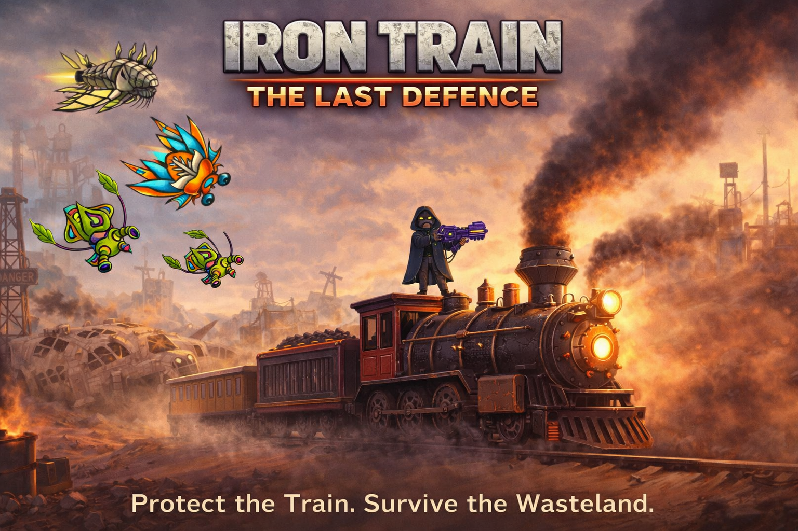
The project began with a simple feeling: I wanted to build something, not just operate existing systems.
I started my professional journey in digital operations at Techstream Services, supporting operations for LOVOO and the ParshipMeet Group. It was challenging work and gave me experience, but something still felt missing.
My academic background was in Computer Science Engineering, and I had been interested in programming and technology since college. In my spare time, I experimented with different technologies, including JavaScript, CSS, and React. Eventually, I wanted to build something functional and fun—not another demo I would abandon after a few days.
Because I had been interested in game development since college and already had some practice with Unity and C#, I decided to try building a game.
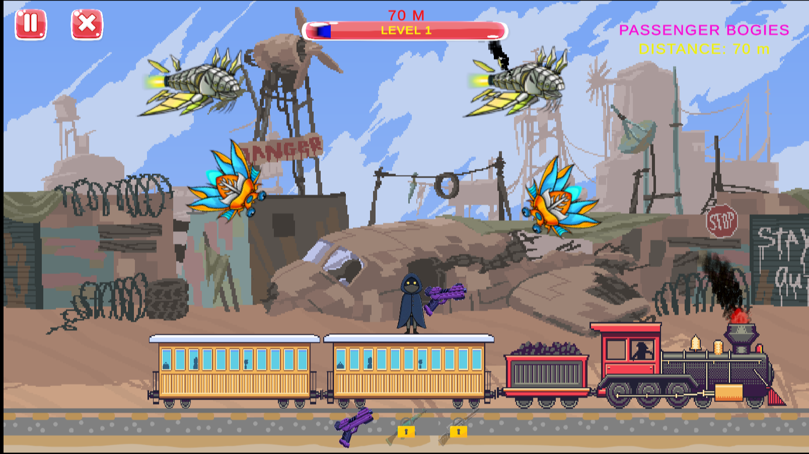
I stopped measuring progress by how many tutorial steps I could copy and started asking what I could understand and build myself.
Following a tutorial can produce a working result, but it can be hard to extend the project if you do not understand why each piece exists or how the pieces connect.
Open Unity, try an idea, observe the result, inspect the code, fix the issue, and repeat. This made each bug an opportunity to learn how the engine behaves.
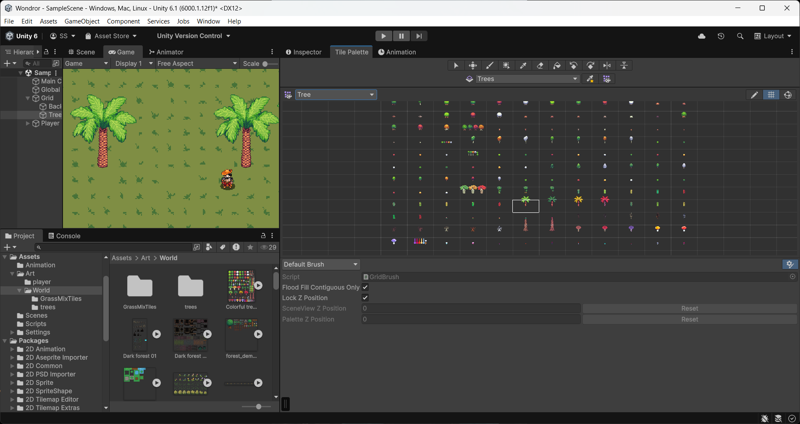
I used ChatGPT heavily to understand Unity concepts, explore C# approaches, write and improve scripts, and investigate errors. I am not ashamed of that. AI was part of my learning workflow.
But blindly pasting generated code often creates more uncertainty. I increasingly focused on what each script is responsible for, which components it depends on, and what I needed to test after changing it.
AI accelerated the experiments; understanding and testing helped me turn them into a game.
IRON TRAIN: THE LAST DEFENCE is a 2D action shooter built around a moving, armored train travelling through a hostile world.
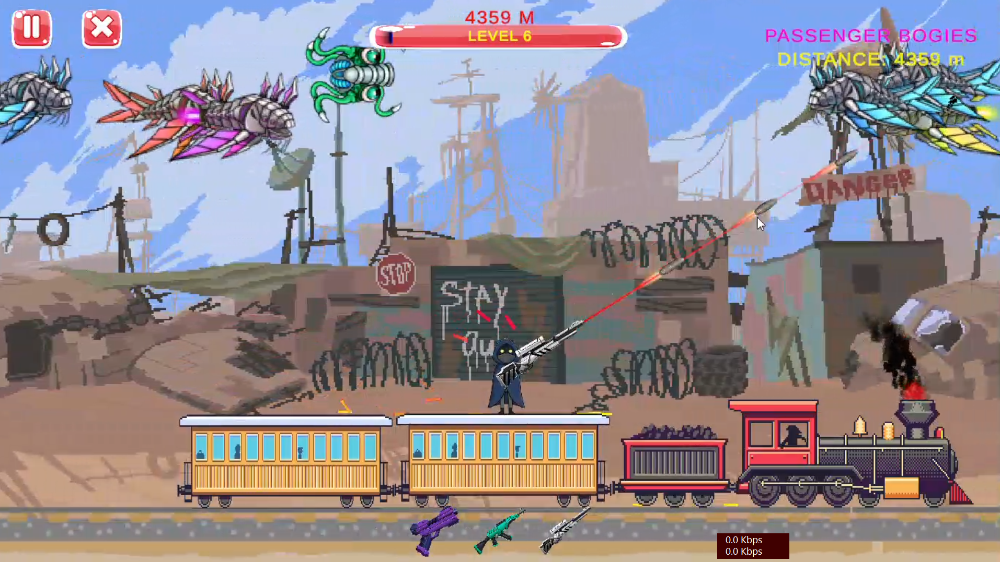
The train is the centre of the experience. Enemies threaten it while the world scrolls past.
The player aims and shoots, using different weapons to handle different threats.
Distance, levels, weapon unlocks, and repeatable difficulty loops give the game a progression structure.
The game needed a stable foundation before enemies, progression, and effects could be layered on top.
Rather than moving the player across a large traditional level, I designed the experience so the player stays in the combat area while the train environment and world movement create the feeling of forward travel.
The WorldScroller script helps drive this movement. Background layers use parallax behaviours, including ParallaxEffect and SimpleParallax, to create a sense of depth without making every environmental object complicated.
The player setup grew to include movement, jumping, ground checks, character flipping, animation changes, aiming, and weapon integration. These responsibilities needed to work together without competing for control of the character.
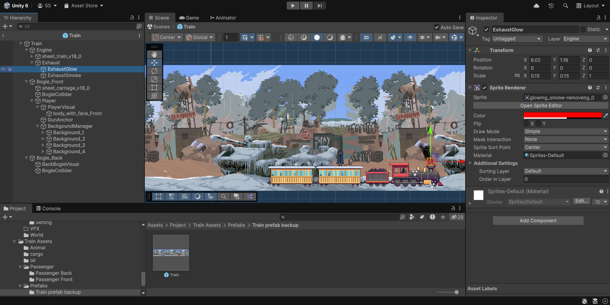
The player system became a collection of connected behaviours rather than one oversized script.
PlayerController: handles core movement, jumping, and ground checking.GunAimRight and GunAimLeft: handle aiming from either side, including angle limits and visual orientation.HybridController: coordinates the character's gun-equipped and no-gun visual states.Mouse-based aiming introduced a useful maths lesson. Unity's Atan2 helps calculate the angle of a direction vector, but the final behaviour also depends on coordinate conventions, angle limits, character facing, and sprite orientation.
When aiming to the left, simply using the same visual setup as the right side did not always produce the result I wanted. Separating the aiming behaviour made the system easier to reason about and adjust.
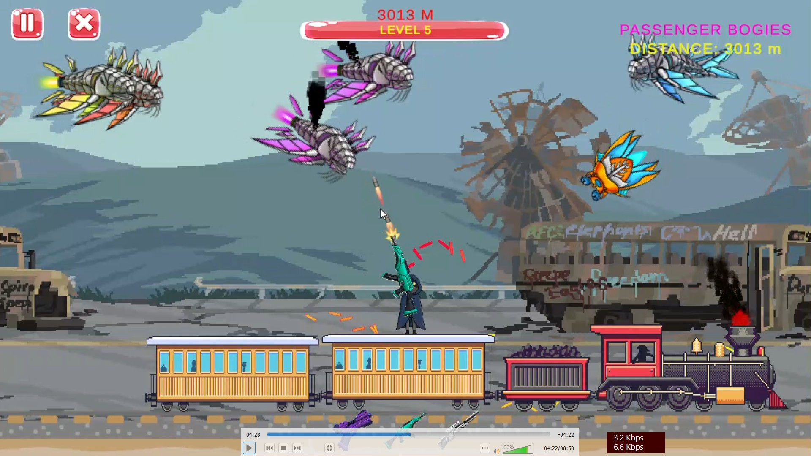
Different weapons should feel different while still sharing a useful amount of underlying logic.
A straightforward single-shot weapon.
A burst-fire weapon configured to shoot three rounds.
A heavier shot intended to offer a different combat feel.
The GunFire script coordinates firing points, the bullet prefab, muzzle flashes, and audio. The projectile prefab uses a BulletSimple script.
The learning was in separating shared behaviour from weapon-specific differences. It is easier to maintain a system when common firing responsibilities are reusable and each weapon only needs to define what makes it different.
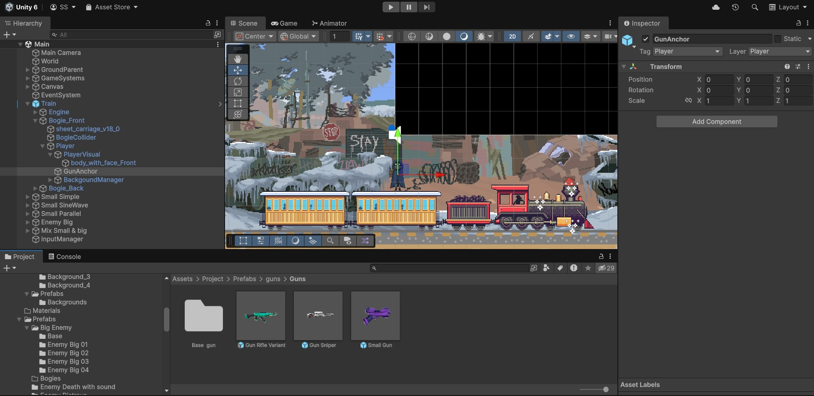
Enemies needed movement, targeting, health, and readable feedback—not just an attractive sprite.
Movement experiments included straight movement, parallel movement, sine-wave patterns, zigzag-style paths, and behaviours that transition into attacks. Scripts included EnemySimple, EnemySineWave, and EnemyParallelAttack.
Larger enemies had higher hit counts and focused more directly on threatening the train engine. The HealthWithSmoke component changed smoke emission as the enemy took damage.
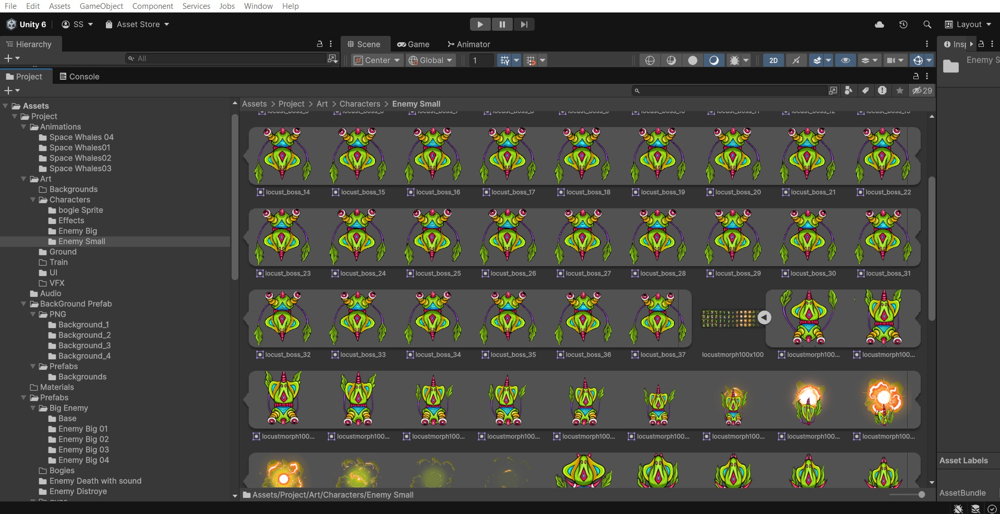
Each movement pattern raised a different question. How does an enemy follow a target? How should a sine wave change its position over time? How does an enemy switch from travelling to attacking?
The key was to keep behaviours understandable and make them work with the health, spawning, and game-state systems.
Once there were multiple enemy types, the game needed a coordinated way to decide when and what to spawn.
EnemySpawnerBasic and EnemySpawnerManager helped separate enemy creation from the enemy behaviour itself. The spawner could coordinate timing and enemy types while considering the wider progression system.
The important dependencies included current distance, active level, loop difficulty, game state, and which enemy types should be available. A spawner should not keep creating enemies when gameplay is paused or over, and it should respond to the right progression stage.
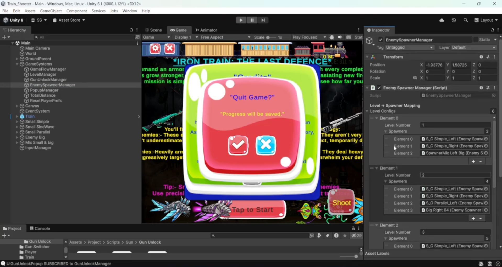
Progression is driven by distance travelled, with each loop acting as another difficulty tier.
The game tracks distance and maps it to a current level. DistanceManager, TotalDistanceManager, and LevelManager help coordinate distance tracking, overall progression, and level transitions.
| Level | Distance range |
|---|---|
| Level 1 | 0–500 m |
| Level 2 | 500–1,200 m |
| Level 3 | 1,200–2,000 m |
| Level 4 | 2,000–3,000 m |
| Level 5 | 3,000–4,200 m |
| Level 6 | 4,200–6,000 m |
Completing 6,000 metres advances the player into the next loop. Loops can increase difficulty and change train-bogie visuals, while the level structure remains tied to the same overall distance model.
| Loop | Planned difficulty multiplier |
|---|---|
| Loop 1 | 1.00× |
| Loop 2 | 1.15× |
| Loop 3 | 1.30× |
| Loop 4 | 1.50× |
| Loop 5 | 1.70× |
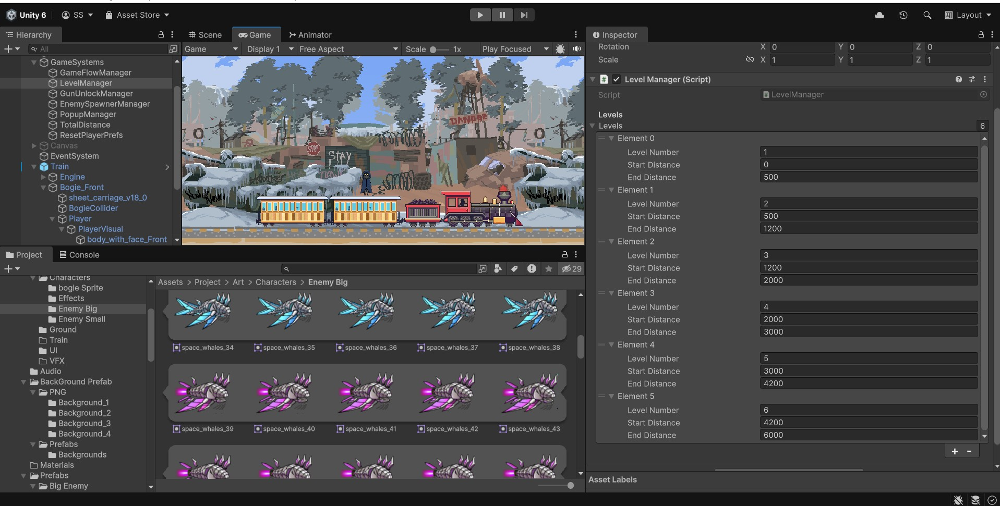
Gameplay, pause menus, popups, unlocks, and the game-over screen all need to agree about what is happening.
GameFlowManager and the GameState enum centralize important states such as Intro, Playing, Paused, Popup, and GameOver.
The UI grew to include distance text, a level progress slider, weapon-unlock notifications, loop-completion popups, a death popup, an intro screen, and settings for sound, reset, and credits.
Components such as UIGunUnlockPopup, UILoopCompletePopup, UIDeathPopup, and UIIntroScreen needed to reflect the real game state. A visual notification is only useful if it appears at the right moment and represents the actual state of the game.
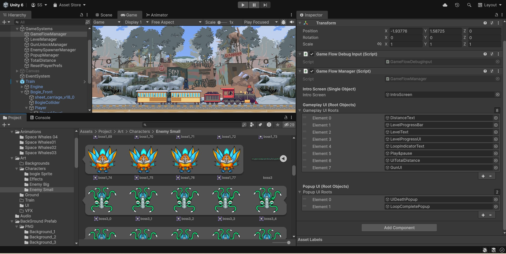
Generating an asset is only the beginning. It must be processed, imported, animated, positioned, and integrated into gameplay.
I experimented with AI-generated visual concepts for the train, enemies, and environments. Blender helped with tasks such as background keying and working with animation frames, while Unity handled the actual integration into scenes, prefabs, and animation systems.
Layered backgrounds and parallax movement helped create depth. Steam, smoke, sparks, and vibration helped make the train feel active rather than static.
Scripts such as WheelSparkAuto and EngineVibration formed part of the visual-effects work. The effects still required practical tuning so that they behaved properly with the moving environment.
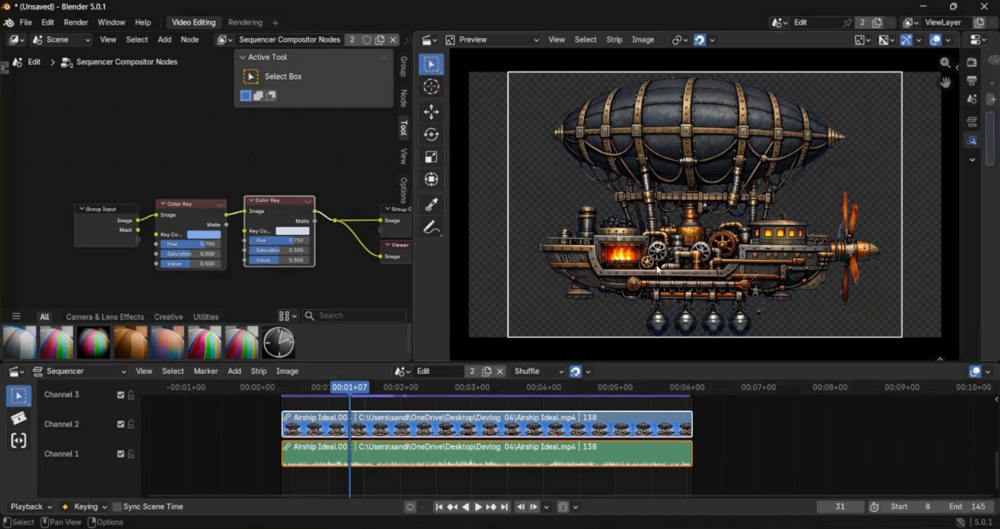
A project working in the Editor does not automatically mean it will behave the same way when packaged for another platform.
I built a Windows executable and a WebGL version. The WebGL build was uploaded to itch.io, making the game playable through a browser as well as downloadable.
I also built an Android APK and worked through mobile input considerations. The first Android build was not published on Google Play.
The project moved to Unity's New Input System. The fire input used a static FireInput approach, while TouchAimHandler supported aiming for mobile touch and Editor simulation.
Progression data used PlayerPrefs keys for version, level, loop, and guns. During testing, I compared behaviour in the Editor, WebGL, and Android. The WebGL build preserved progression as expected in our tests, while Android retained an arcade-style restart behaviour that could return the game to the first level and loop after quitting.
This reinforced a practical lesson: validate behaviour in the actual target build. A successful compile or an Editor test is not a substitute for testing the complete experience on the platform where people will play.
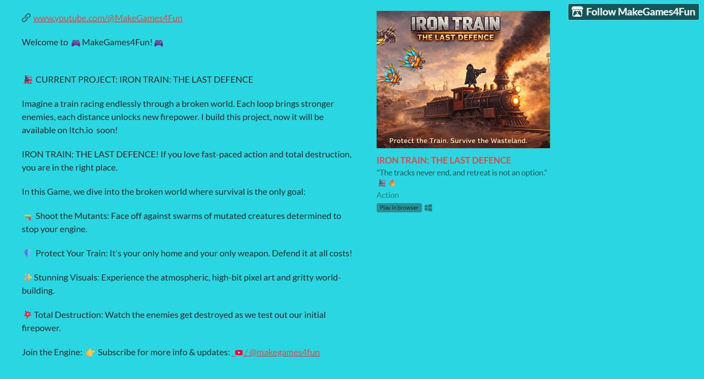
Individual features could work in isolation and still fail when combined. Debugging the connections became one of the most valuable parts of the process.
Angles, direction vectors, angle limits, and sprite orientation all mattered. A correct formula alone could not guarantee a correct-looking aim.
Distance tracking, level boundaries, spawning, popups, and difficulty changes needed a consistent view of game progress.
Mouse and touch input required different handling, but both needed to drive the same intended gameplay actions.
A change to one controller, prefab, or game state could affect another system. Regression checks became important after each meaningful change.
I want the channel to show not only the finished game, but also the thinking and practical concepts behind its systems.
The tutorial topics we planned alongside the game include the player system, aiming, character flipping, enemy behaviour, and the manager that connects enemy spawning to game progression. As new videos are published, this page can link directly to the relevant episode.
Player movement, jumping, animations, character setup, and a mouse-based gun system.
Understanding PlayerController, HybridController, GunAimLeft, GunAimRight, character flipping, ground checks, and visual switching.
A visual and practical starting point for explaining enemy behaviour before moving into more complex spawning and management systems.
Level systems, game states, events, difficulty loops, and coordinated enemy spawning.
The first release gave me a foundation. The next version is the next chapter—not the end of the learning process.
Most of the core components for Part 2 are ready, but I have also been busy with other projects, including Hivemart and EchoMate. I plan to return to the game soon and continue the work with the time and focus it deserves.
Expanding the game further and making the next version available on Android and iOS are goals for the upcoming stage. The distribution plan includes itch.io, with the exact release arrangements to be worked through as development continues.
I'll use this page to share new milestones, screenshots, technical discoveries, and links to videos as they become available.
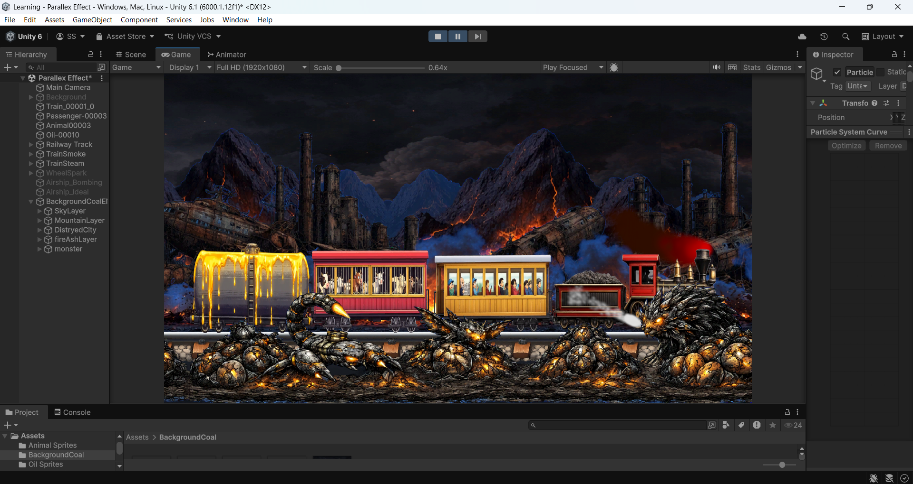
You need to start building, stay curious, and learn from what breaks.
I started this project because I wanted to build something of my own. I began with tutorials, found myself stuck in tutorial hell, and changed my approach to learn through experimentation.
I used AI as part of my workflow, built gameplay systems one by one, worked through bugs and platform differences, and eventually released a playable game.
I'm still learning Unity. I'm still learning C#. And I'm still using AI as one of the tools in my development workflow. But now I have a game I built, a better understanding of how its systems work together, and a foundation I can continue improving.